MADE BY
HISTORY
ABOUT
SERVICES
DOWNLOAD
TIME LINE

2022년 2월
길형진 디자이너, 프리텐다드 서체 개발을 시작
2022년 5월
프리텐다드의 기본적인 윤곽을 완성
2022년 6월
프리텐다드 서체를 무료로 배포
출시 직후부터 큰 인기를 끌며 누적 다운로드 수가 100만 건을 돌파
2023년 6월
프리텐다드를 2로 업데이트 진행